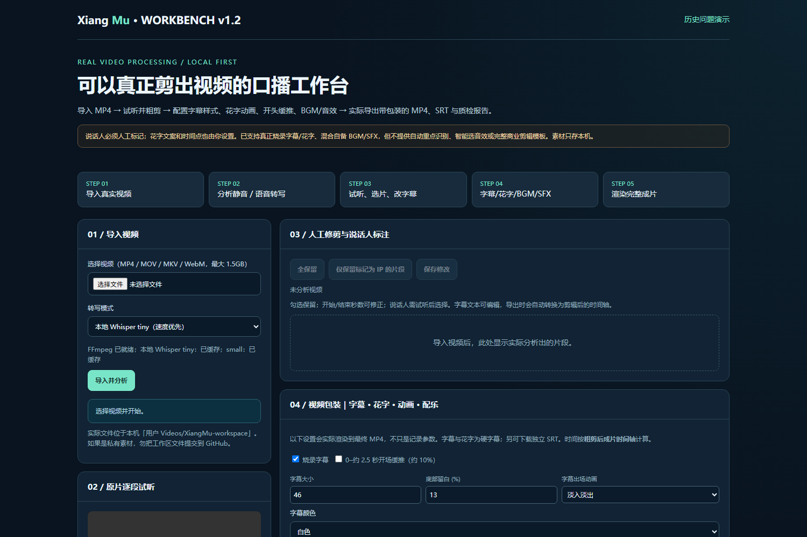

视频导入和停顿分析
导入 MP4 等素材，读取视频信息，识别静音区间，生成粗剪候选片段。
Xiang Mu 是一套本地口播视频处理工作台，围绕实际使用中容易出现的停顿、重复 take、字幕断句和后期包装问题，将视频处理、人工复核、质量控制与成片导出串成一个完整流程。
实际工作台画面、分段修剪、字幕花字配置、真实成片导出结果。无需安装软件。
网页是操作入口，FFmpeg / libass 负责实际视频剪切、字幕花字渲染与声音合成。所有功能以最终生成的视频文件为验收对象。
导入 MP4 等素材，读取视频信息，识别静音区间，生成粗剪候选片段。
人工调整时间点、拆分连续片段、标记说话人，并复核口误与重说部分。
编辑字幕内容、字号、颜色和位置；可烧录淡入或轻弹动画，并导出独立 SRT。
逐条设置重点文案、颜色、画面位置，以及弹入、淡入和上浮动画。
使用自备音乐与音效设置音量、时机，音乐可循环并添加淡入淡出。
输出 H.264 MP4、SRT 字幕和 JSON 质检信息，复核片段数量、时长与包装状态。
下方是运行中的真实项目界面截图，以及使用项目渲染程序制作的合成素材样例。样例用于验证动画和字幕效果，不冒充客户商业成片。

由 FFmpeg + ASS 真实编码的视频样例（合成测试画面，无客户素材）
展示页与编辑器的区别：这个网址用于长期展示项目，视频可直接播放；真正的视频上传、剪辑和导出运行在独立的本地 Python 工作台。为了避免访客上传敏感素材，展示页不会伪装成在线剪辑服务。
口播剪辑不只是“自动识别语音并切掉静音”。实际素材里存在多人交替说话、重录、语义断句、花字出现时间、声音层级等问题。仅展示理想流程无法解决真实使用困难。
因此将方案拆分为：自动生成候选结果 → 人工校正关键判断 → 实际执行包装 → 最终文件质检。
建立结构化规则与回归案例，再使用程序生成的音视频测试实际验证：是否真的裁剪、是否保留音轨、字幕时间是否对齐，画面是否出现花字，音乐和音效是否被混入最终 MP4。
目前已通过 18/18 项程序测试；真人口播素材的审美质量仍需要人工验收。
能力边界：目前并不能稳定自动区分操盘手和出镜 IP，也没有实现自动识别全部口误、智能生成重点花字或自动匹配复杂模板。这是一个具备真实处理能力、允许人工复核的产品原型，不是完全无人值守的商业剪辑系统。